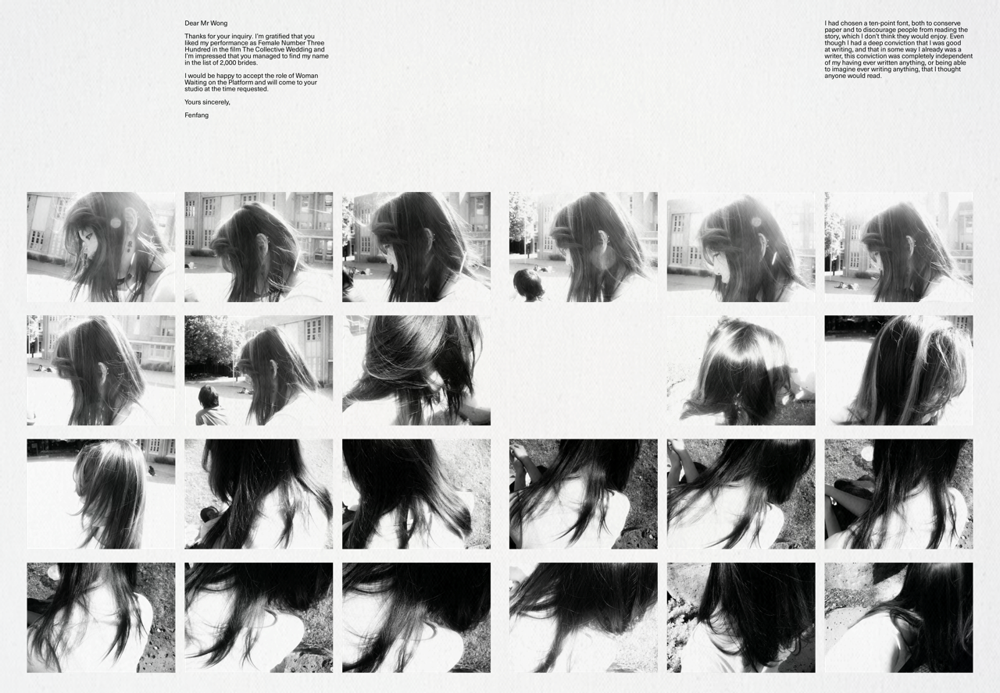
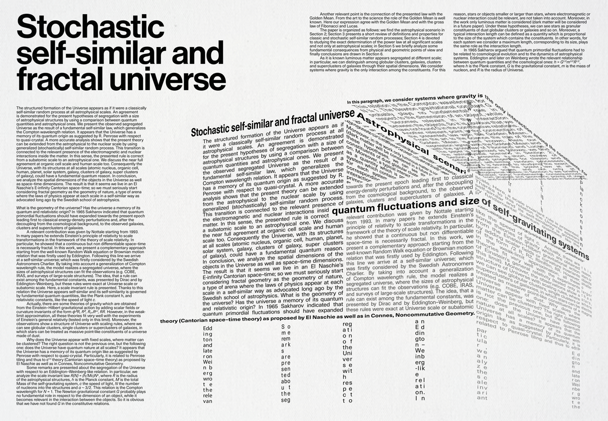
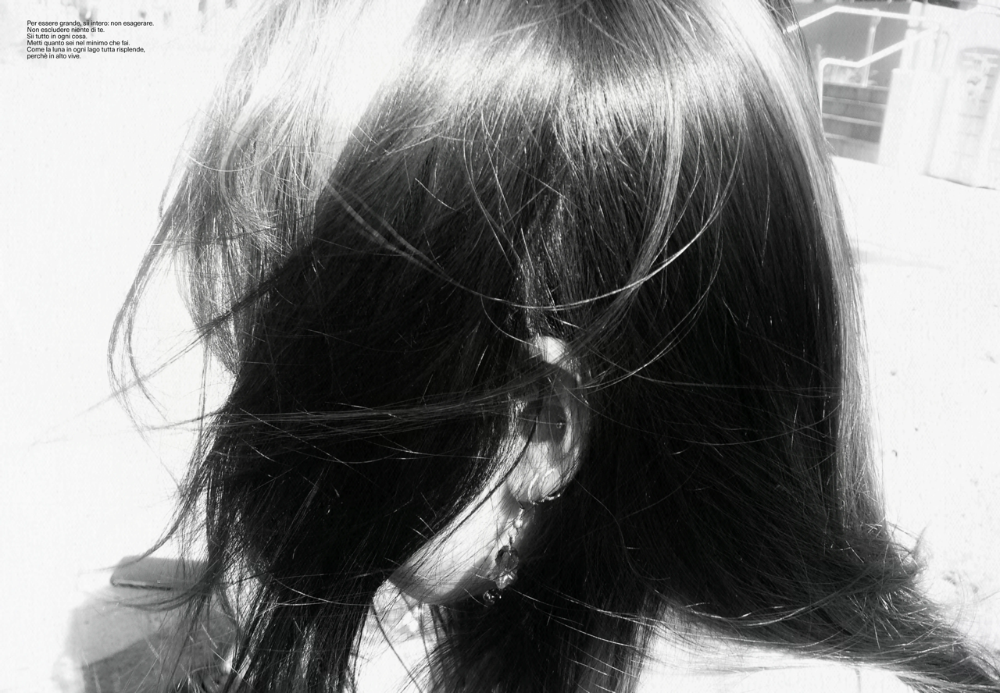
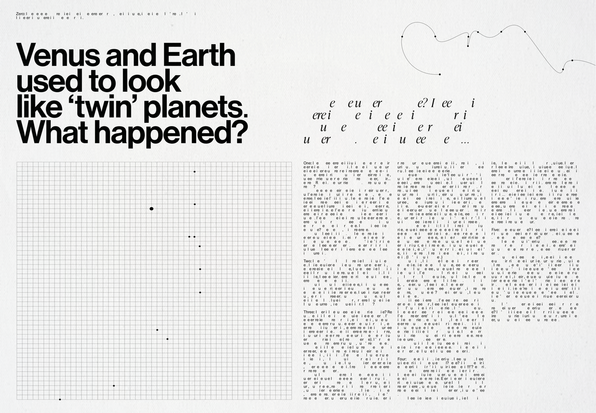
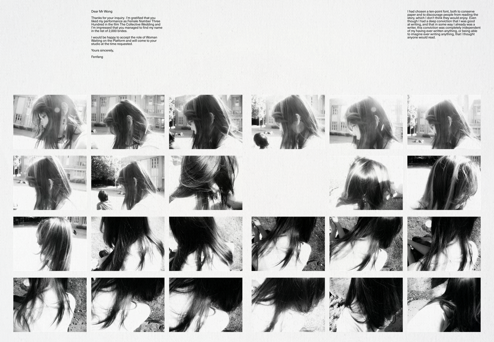
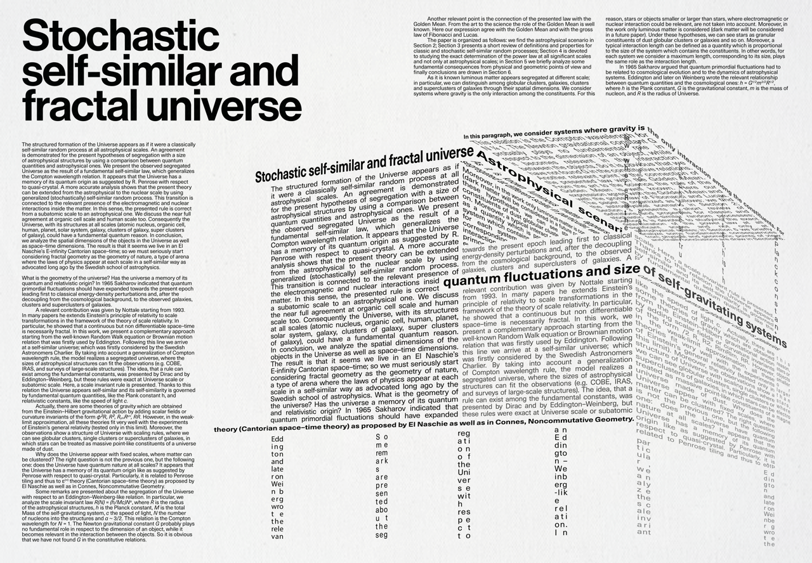
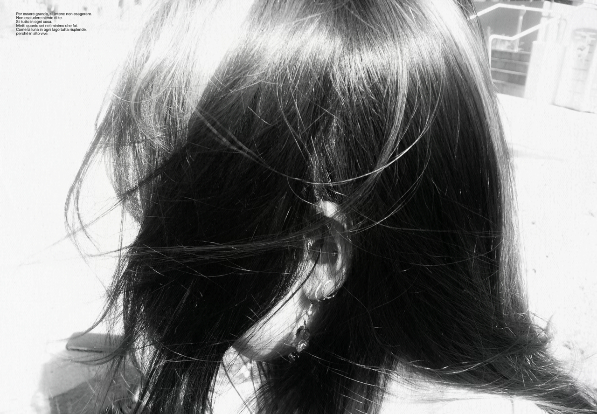
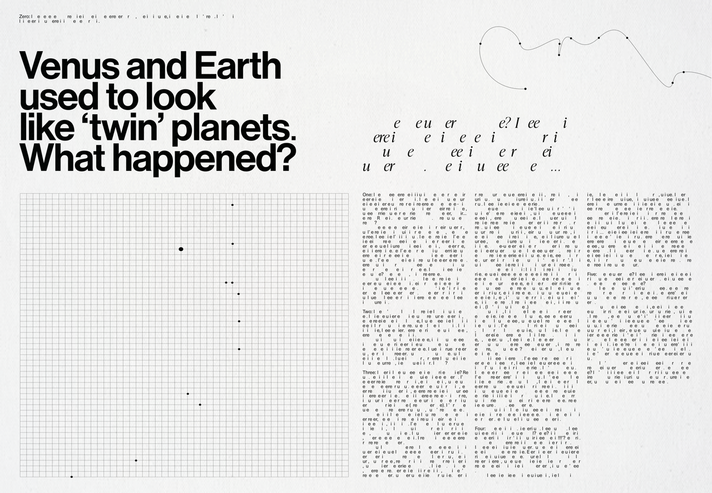

Counterpart
Newspaper
Entering the world an identical twin, I have always found the dual nature of identity to be an intriguing subject. Counterpart is an experimental publication exploring the notion of existing as a constituent of a whole, reflecting on the lived experience of twinhood. It contemplates the delicate balance between symmetry and duality, where the self is simultaneously distinct and deeply linked to another.
Acknowledging the complexities of this existence, I consider how this dynamic intertwines with a broader narrative - one where twin identity is often misunderstood, oversimplified, and commodified by the wider world.
The newspaper format serves as a vessel that mirrors the accessibility and misinterpretation of twin identity. Through this medium, Counterpart captures the inherent tension of being part of a larger whole, delving into the intricacies of an identity that exists at once revealed and concealed.
 






